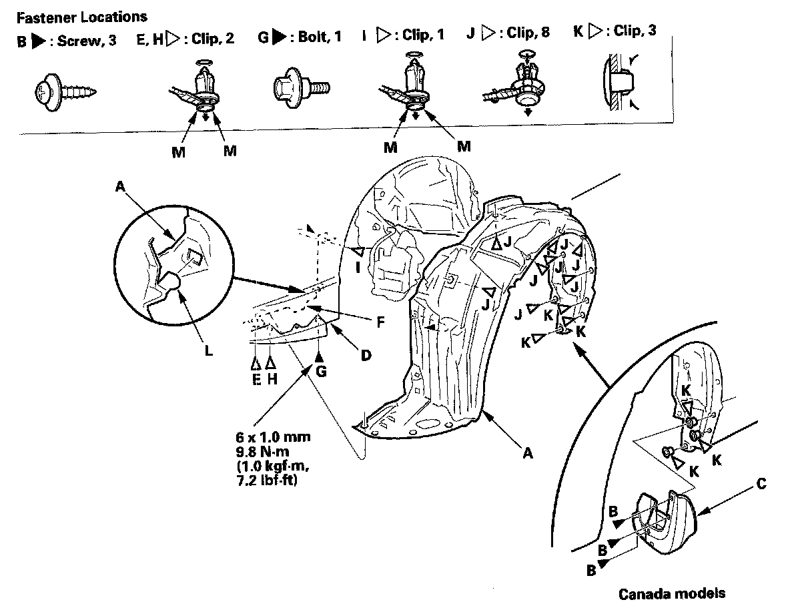
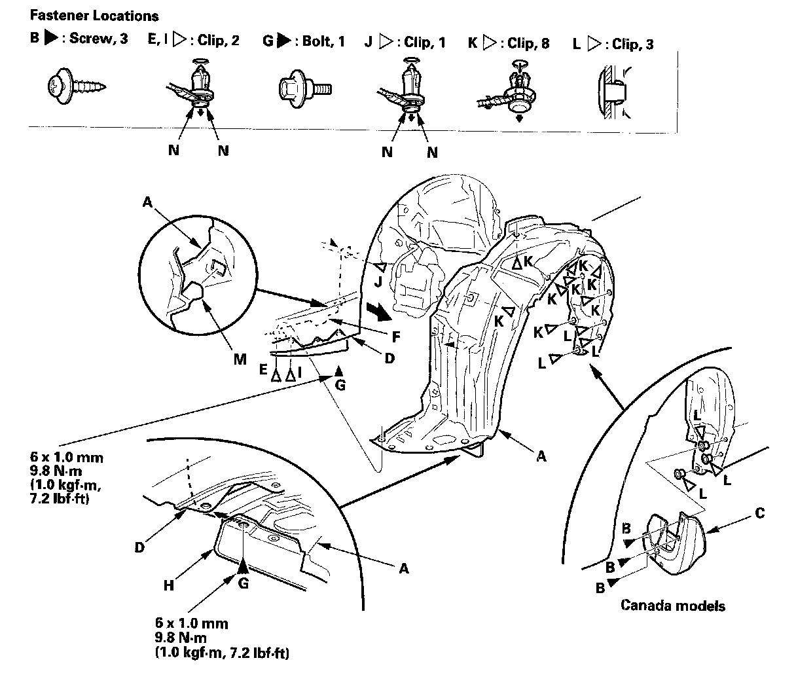
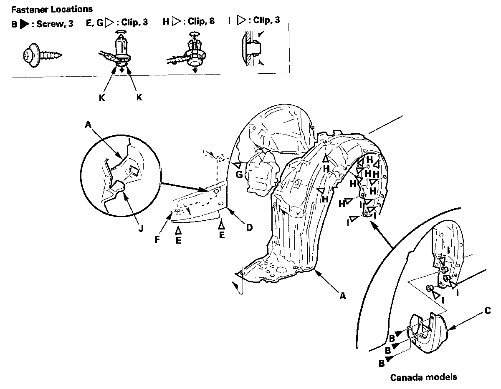

Front Inner Fender Replacement
Front Inner Fender Replacement2-door (Except Si model)
NOTE: Take care not to scratch the body.

1. Remove the front inner fender (A).
1. On the back of the wheel arch, remove the screws (B), and remove the front splash guard (C) (Canada models).
2. From under the front bumper (D), remove the clip (E), securing the splash shield (F), and front inner fender, and remove the bolt (G) and clip (H) securing the front bumper and front inner fender.
3. From the wheel arch, remove the clips (I, J, K) securing the front inner fender (and splash shield) to the body.
4. Release the hook (L) of the splash shield, then remove the front inner fender.
NOTE: To remove the clips E, H and I, pry the inner the clip up at the edge near the line (M) on its head.
2. Install the inner fender in the reverse order of removal, and note these items:
- Check if the clips are damaged or stress-whitened, and if necessary, replace them with new ones.
- Push the clips into place securely.
2-door (Si model)
NOTE: Take care not to scratch the body.

1. Remove the front inner fender (A).
1. On the back of the wheel arch, remove the screws (B), and remove the front splash guard (C) (Canada models).
2. From under the front bumper (D), remove the clip (E) securing the splash shield (F) and front inner fender, remove the bolt (G) securing the front strake (H), front bumper, and front inner fender, and remove the clip (I) securing the front bumper and front inner fender.
3. From the wheel arch, remove the clips (J, K, L) securing the front inner fender (and splash shield) to the body.
4. Release the hook (M) of the splash shield, then remove the front inner fender.
NOTE: To remove the clips E, I and J, pry the inner pin up at the edge near the line (N) on its head.
2. Install the inner fender in the reverse order of removal, and note these items:
- Check if the clips are damaged or stress-whitened, and if necessary, replace them with new ones.
- Push the clips into place securely.
4-door
NOTE: Take care not to scratch the body.

1. Remove the front inner fender (A).
1. On the back of the wheel arch, remove the screws (B), and remove the front splash guard (C) (Canada models).
2. From under the front bumper (D), remove the clips (E) securing the front bumper, splash shield (F), and front inner fender.
3. From the wheel arch, remove the clips (G, H, I) securing the front inner fender (and splash shield) to the body.
4. Release the hook (J) of the splash shield, then remove the front inner fender.
NOTE: To remove the clips E and G, pry the inner the clip up at the edge near the line (K) on its head.
2. Install the inner fender in the reverse order of removal, and note these items:
- Check if the clips are damaged or stress-whitened, and if necessary, replace them with new ones.
- Push the clips into place securely.